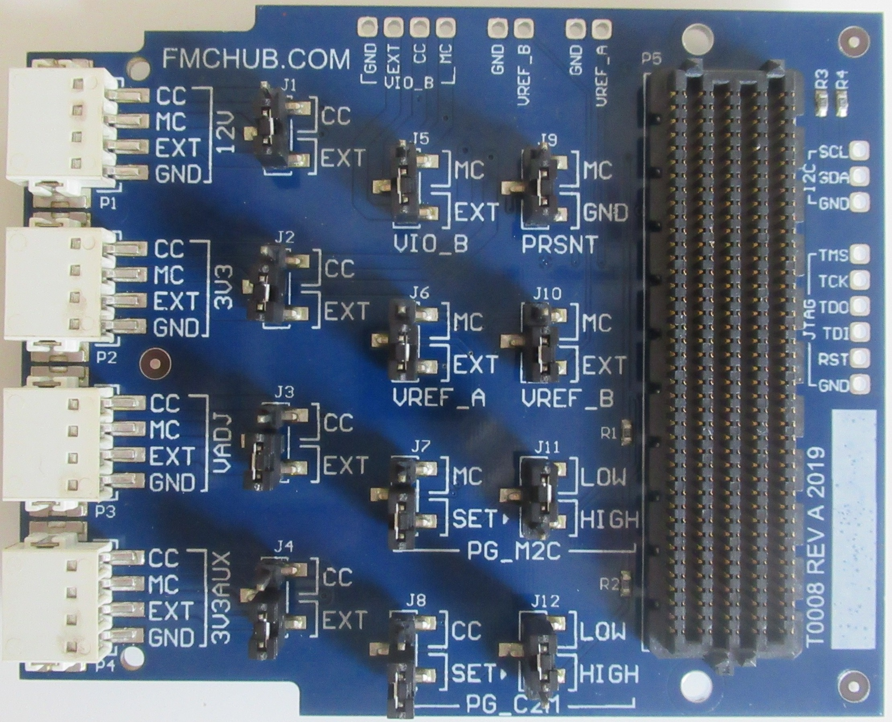

- HPC interconnector for the breakout and supply of all power signals
- Forwarding of all FMC High-Pin Count signals
- Allows external supply of all FMC voltage rails
- Selectable voltage supply via the carrier board or external source
- Connections for measuring current loads on all rails
- Manipulating FMC control flags between carrier and mezzanine card
- Determination of the load behaviour under different conditions
- Open-source hardware

- Electrical characterization of FMC modules
- Analysis of current consumption
- Compliance and production tests
- Easy prototyping and debugging
The FMC Power Module is designed to provide external power to FPGA mezzanine cards (FMC) under test. Often the FMC carrier board does not have the capabilities to monitor and manipulate the FMC voltage rails (12.0V, 3.3V, VADJ and 3.3V AUX) individually. For testing an FMC card, it is convenient to feed the voltages through an external power supply. This allows the voltage levels and current consumption to be closely monitored and verified. Such analysis is required for each FMC module because all power requirements must be stored in the EEPROM of the Field Replaceable Unit (FRU) on the mezzanine card. The supply of external voltages is useful for a variety of Unit-Under-Test applications.
T.B.D.
The printed circuit board is open-source hardware! You can download the FMC Power Module schematics and FMC Power Module board layout files in their latest revision from http://www.fmchub.com.
| Product no. | Description | Market place | Request quote | Standard lead time |
| T0008 | FMC Power Module with MC-HPC-10 and CC-HPC-10 connectors on bottom and top side. | IAM Electronic Shop Ebay #185439259823 Tindie #26892 DigiKey6068-T0008-ND | info@iamelectronic.com | Normally in stock, otherwise 3 weeks |